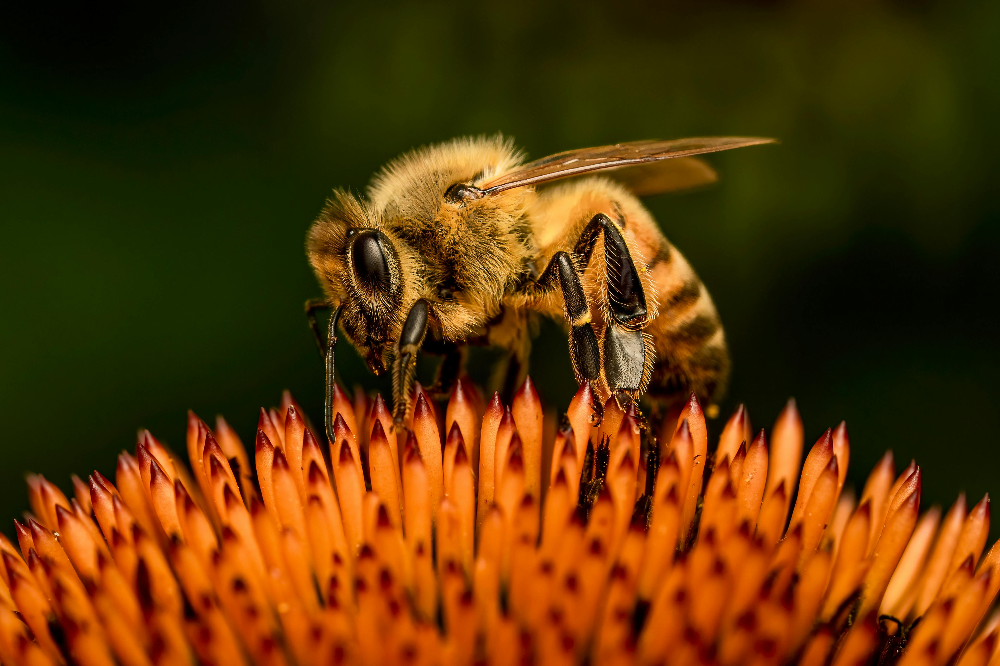
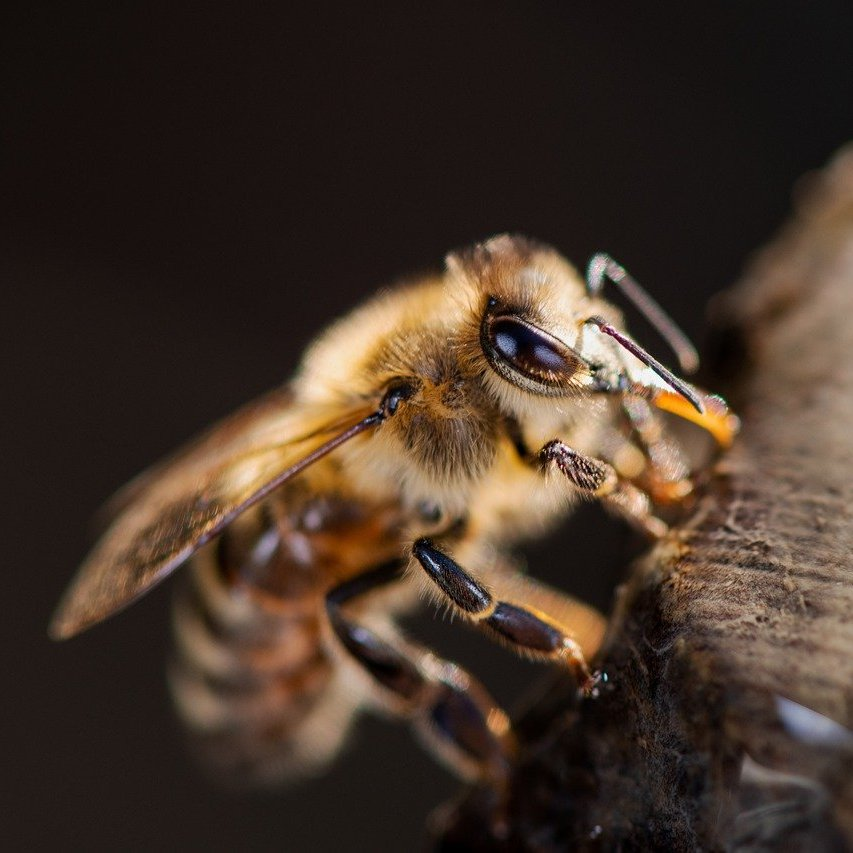
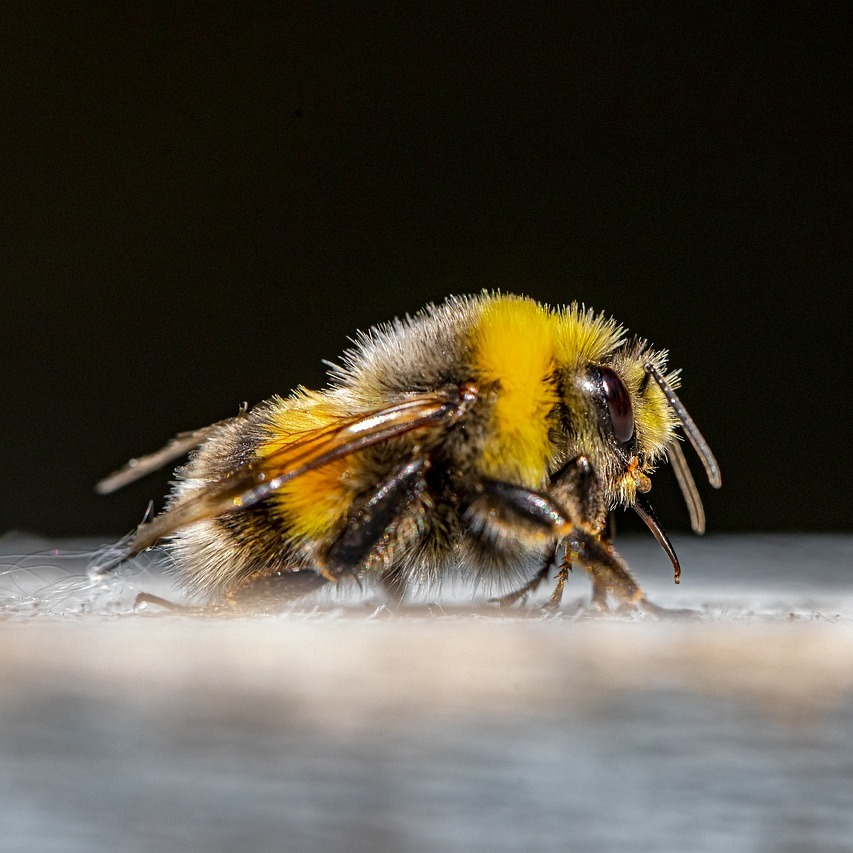
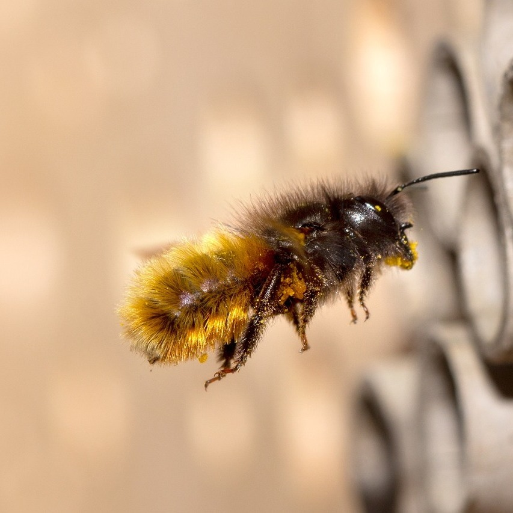
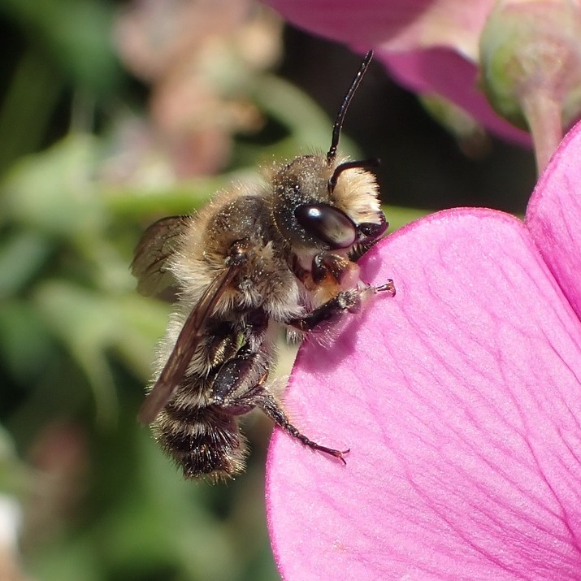

There are over 20,000 known species of bees in seven recognized biological families. Learn everything there is to know about honey bees, bumble bees, mason bees, and more.

Frequently seen bees

Honey bees are social bees that are known for their populous hives that can exceed numbers of 60,000.

Bumble bees are large social bees that live in small colonies of around 50 individuals. They usually construct their colonies underground.

Mason bees are small solitary bees that do not create colonies. They construct nests for themselves using mud and sand.

Leafcutter bees are small solitary bees that also do not create colonies. They have scissor-like jaws which they use to cut apart leaves and petals.